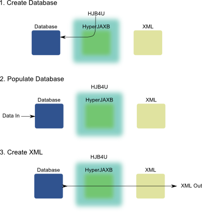

HJB4U is a toolchain for the creation of a HyperJAXB front end database users. It was created because we had a number of databases users that had to convert there data into XML for govenment reporting purposes. Unfortunantly the schema was constantly evolving, with monthly updates over the course of a year(s). I simply didn't have the time to tweak the code every time they decided to update the schema, so HJB4U was born.
Developer Workflow:
- Select Schema
- Generate Sources
- Create default configuration
- Package
- Give to Users
User Workflow:
- Create Database
- Populate Database
- Create XML
- Valitadte XML
- Fix Issues
- Repeat Steps 3-5 until validation.
